Projects
Master Thesis: Physics-Based Deep Learning for Optoacoustic Tomography Reconstruction
Multiscale Functional and Molecular Imaging Lab, ETH Zurich
09.2025--05.2026
Supervisors: Prof. Dr. Daniel Razansky and Dr. Xose Luis Dean-Ben
- Reconstructed approximately 600 optoacoustic tomography (OAT) slice images from six mice using filtered back-projection (FBP) and model-based LSQR reconstruction, incorporating heterogeneous speed-of-sound (SoS)modeling and scattering weighting algorithm.
- Adapted the FISTA-Net deep unrolling framework for sparse-view and limited-view OAT reconstruction by preserving explicit forward-model-based data fidelity, removing non-negativity constraints, and incorporating an SSIM-based loss term, enabling the network to learn an implicit data-driven regularization prior for complex biological structures.
- Performed quantitative evaluation using PSNR, SSIM, and RMSE, demonstrating consistent improvements over sparse-view FBP baselines as the number of uniformly sampled detector channels increased, while observing that limited-view reconstruction remained challenging due to structural information loss from missing angular coverage.
- Evaluated Hessian-based filters (including Frangi and Jerman filters), Weingarten and GVF-based filters, and developed a U-Net post-processing network with vesselness-enhanced supervision.
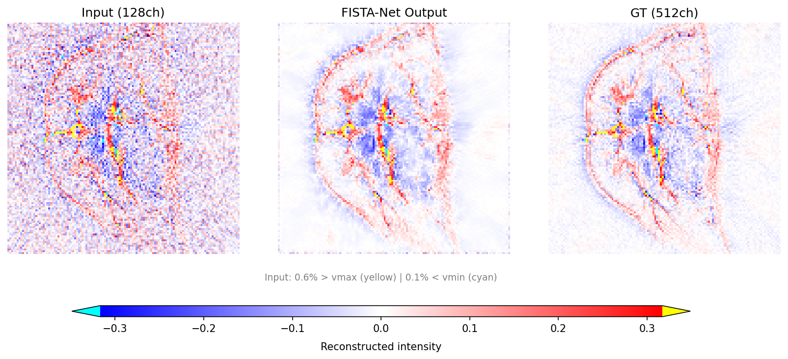
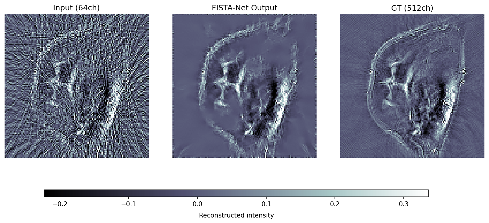
Semester Project: Fabrication of Hydrogel-Based Self-Locking Cuff Electrodes for Nerve Stimulation
# Self-locking Cuff Electrodes for the Nerve Stimulation
Multi-Scale Robotics Laboratory, D-MAVT, ETH Zurich
10.2024--07.2025
Supervisors: Prof.Dr.Salvador Pané i Vidal , Dr. Semih Sevim, and Huimin Chen
- Designed and optimized PEGDA/PNIPAM hydrogel formulations for DLP-based 3D printing.
- Fabricated thermoresponsive bilayer hydrogel structures with tunable curvature by controlling printed layer thickness and bilayer geometry.
- Developed hydrogel-based cuff electrode prototypes for future neuromodulation applications, with potential integration of functional nanoparticles for magnetic-field-responsive electrical stimulation.
- Built experimental platforms, including 3D-printed connectors and fluidic systems, to evaluate device performance under controlled flow conditions mimicking in vivo environments.
- Performed structural and morphological characterization using micro-CT and optical microscopy.
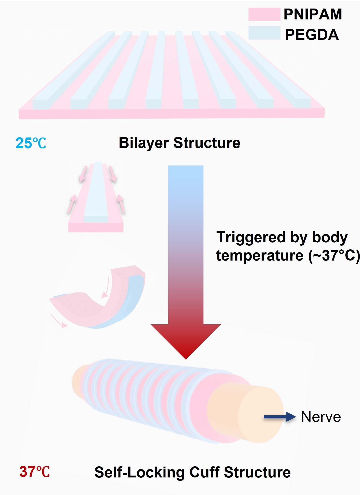
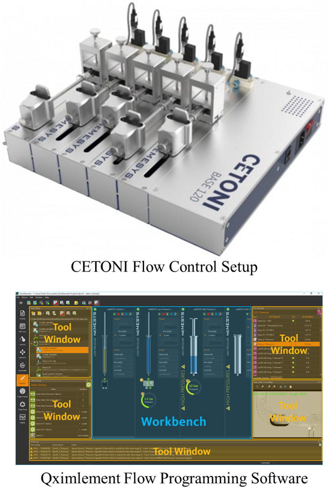
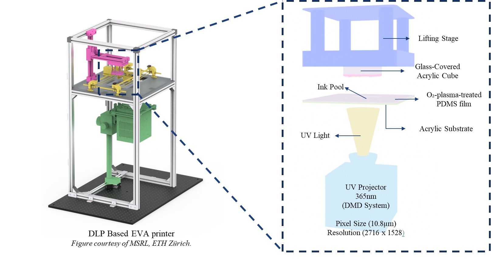
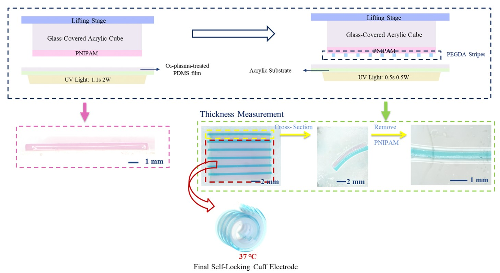
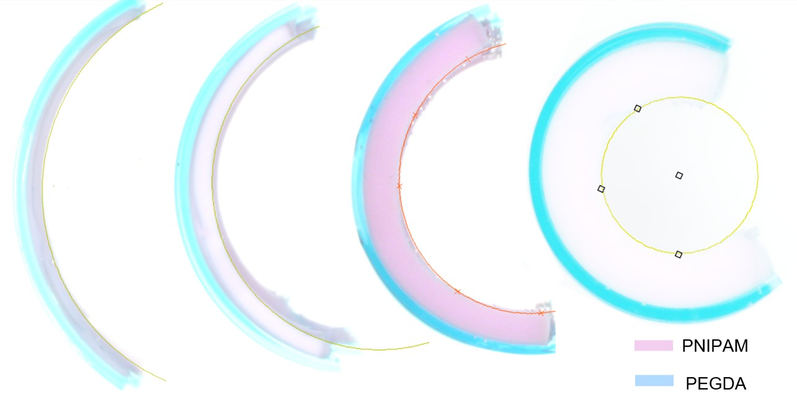
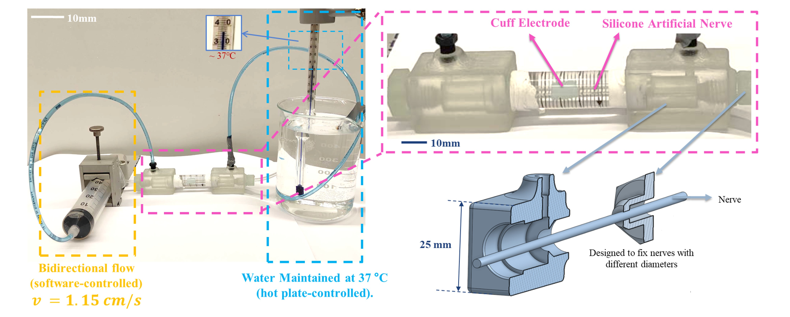
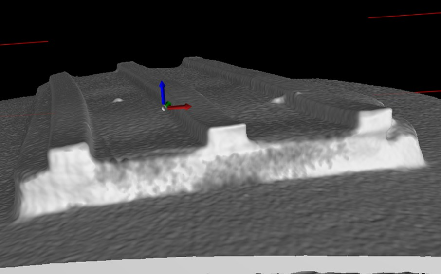
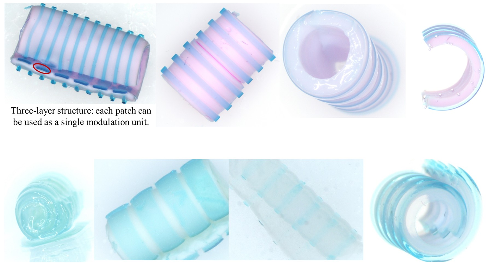
Course Team Project: Automated Ball Shooting System
Bio-Inspired Robots for Medicine-Lab, Department of Biomedical Engineering, University Basel
04.2024--06.2024
- Developed a PD-controlled ball launching platform with real-time control via Simulink Stateflow and Beckhoff TwinCAT 3, optimized using a multi-phase trajectory strategy.
- Integrated infrared and piezoelectric sensors to detect successful throws and impacts for closed-loop performance evaluation.
- Achieved a 100% hit rate in 10 ball throws; Recorded the highest number of successful hits per unit time; Ranked first among all groups.
Course Project: Exam Scheduler Optimization
05.2024--06.2024
- Developed and implemented Simulated Annealing and Genetic Algorithm approaches to solve the university final exam scheduling problem.
- Incorporated a penalty-based constraint handling mechanism to ensure feasible and efficient exam timetables.
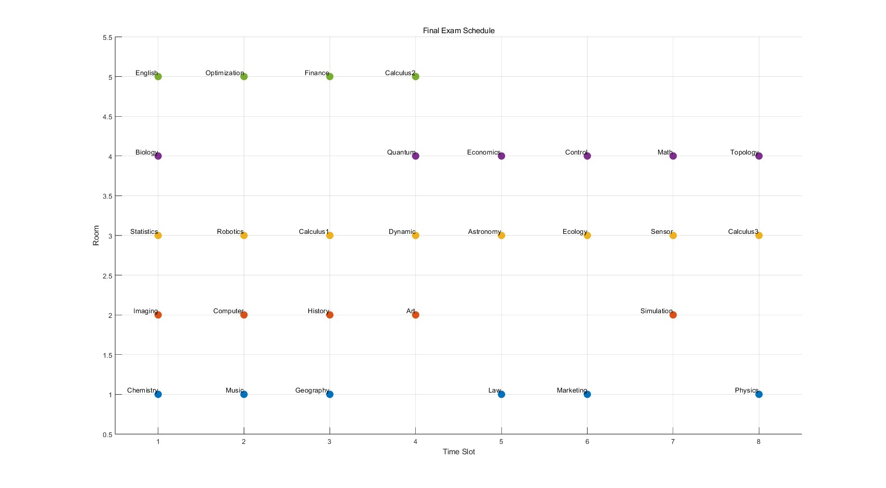
Course Project: Phone Tracking in Homogeneous Magnetic Field
03.2024--06.2024
- Built a 3D magnetic tracking system using smartphone Hall sensors and PCB-based Helmholtz coils.
- Implemented quadrilateration and lookup-table-based localization with sub-centimeter accuracy.
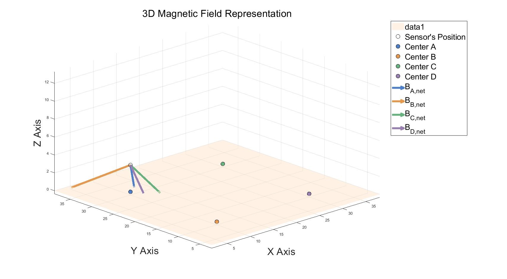
Course Team Project: Surface and Volume Visualization of MRI Data
12.2023
- Display the surface of the patient in the given MRI Data.
- Visualize the data using isosurface extraction, point cloud representation, and surface rendering techniques.
- Visualize the data using Volume rendering .
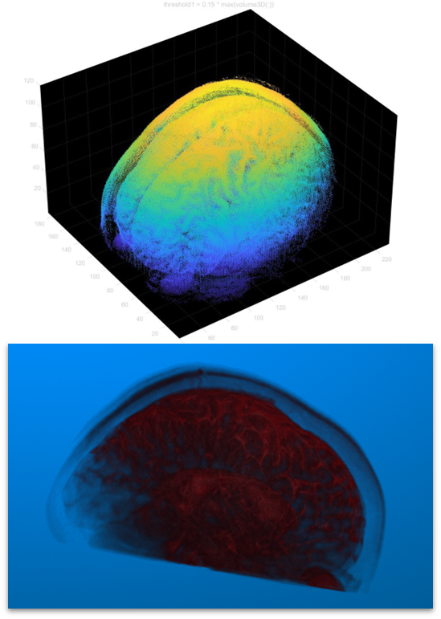
×